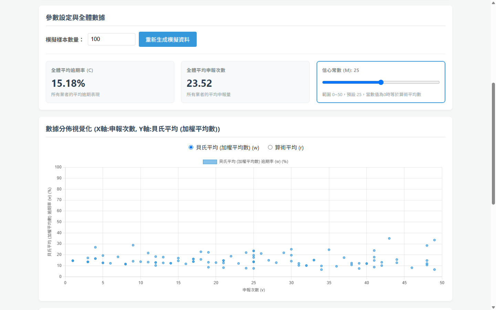

實心＝執行團隊 虛線＝系統自動，不經人手
我 ｜ 專案負責人
- 訂定年度執行方向
- 制定 SOP
- 制定 KPI
4 位行政客服人員
四項職能共同分攤，不各自專責
申報諮詢
業者申報前後的電話與現場諮詢，協助補件。
流程：申報
申報審查
一審：檢核申報資料，退件或送政府二審。
流程：一審
繳費催帳
即將到期與逾期案件的提醒、追蹤與紀錄。
流程：繳費
日常行政
公文、報表、會議紀錄與資料整理。
流程：全程
專案管理
- 參與評選簡報並得標
- 依合約項目排定年度期程，在期限內完成
- 撰寫期中、期末報告書，出席審查會議
- 完成驗收
維運申報平台
- 蒐集業者與政府端的使用需求與問題
- 整理成需求說明，與資訊部門討論開發
- 排定功能優先順序，驗證上線結果
資料庫管理
- 資料清洗、補遺、正規化
- 數據分析，提供決策依據
- 製作定期報表
- 回應議員索資
法律諮詢
- 遇特殊案例時，整理相關法規、解釋函、判決書
- 提出處理建議，協助政府單位判斷
- 回覆業者對法規適用的疑義
宣導會議
- 每年辦理 3 場，每場約 200 人
- 規劃議程與教材
- 擔任授課講者
管理團隊
- 訂定年度執行方向
- 制定 SOP，統一作業標準
- 制定 KPI，追蹤達成情形
示意數據。分布形狀與比例依實際觀察：雙峰在第 1 與第 14 天，逾期 3% → 0.2%。
- 1每日匯出每天從資料庫匯出未繳案件到 Google Sheet
- 2條件格式高亮剩餘 3 天以內的列自動變色
- 3電話提醒行政人員依名單逐一聯繫
| 案件 | 開單日 | 繳費期限 | 剩餘 |
|---|---|---|---|
| NT-2609-0412 | 09/03 | 09/17 | 1 天 |
| NT-2609-0418 | 09/04 | 09/18 | 2 天 |
| NT-2609-0425 | 09/05 | 09/19 | 3 天 |
| NT-2609-0431 | 09/08 | 09/22 | 6 天 |
| NT-2609-0440 | 09/10 | 09/24 | 8 天 |
| NT-2609-0447 | 09/15 | 09/29 | 13 天 |
「經常」是幾次？還是幾成？
如果算次數
申報幾百件的大戶，逾期次數一定最多——但他的逾期比例可能很低。
如果算比例
只申報過 2 件、2 件都逾期的業者是 100%——但 2 件說明不了什麼。
真正要找的
逾期比例高、而且申報量足以證明這不是偶然的業者。就像餐廳評分：1 則 5.0 星，和 500 則 4.6 星，哪家可信？
w = v · r + m · c v + m
v 申報件數 r 逾期率 m 信心常數 c 全體平均逾期率
m 決定「多少件才算可信」。範例用 m = 20。

開啟模擬工具↗在新分頁開啟，可調整樣本數與 m。